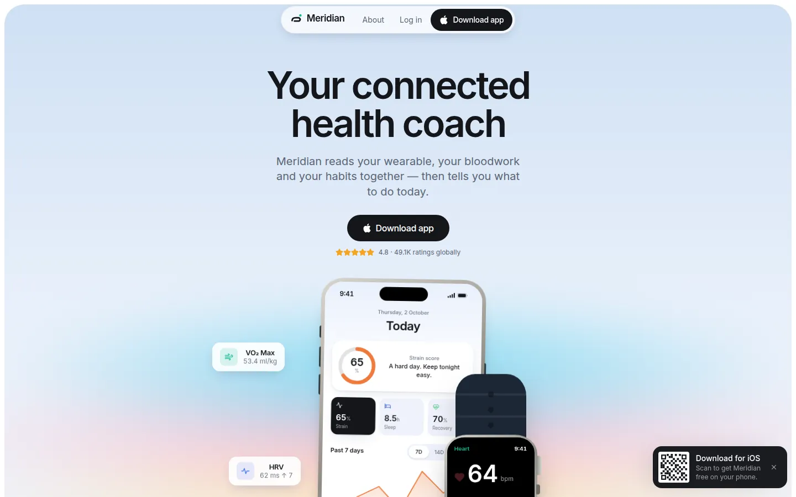
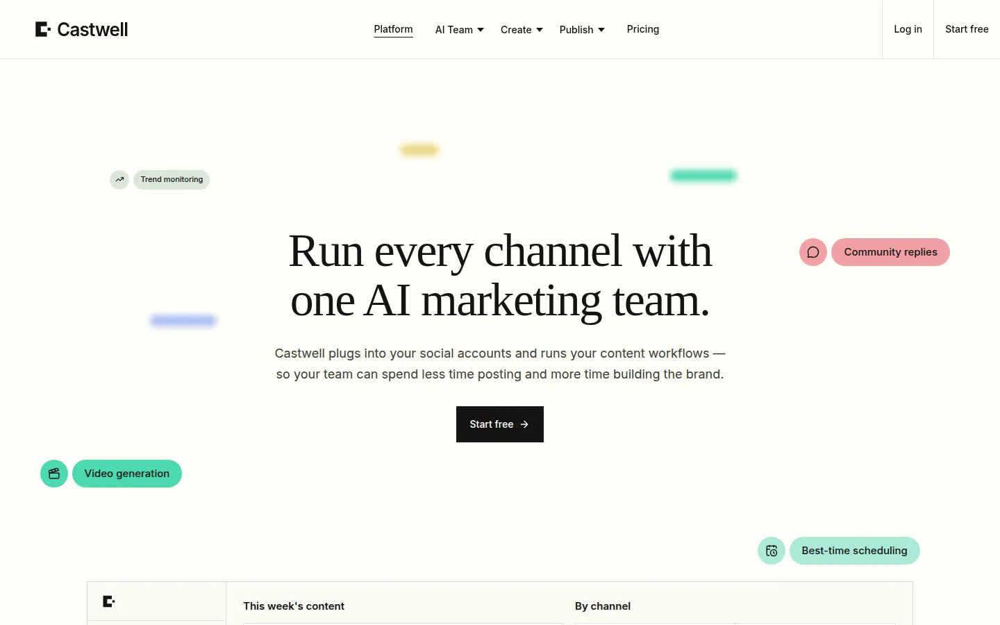

Remix · Marketing · Health
Cadence Fitness
Cadence, a fitness and vitals app's landing page on a green-black ground
Clones it into a folder you pick, as a new project. No Codecaine yet? Get it free
Nothing opened? Codecaine has to be installed and opened once for this link to work. Install Codecaine, or download the project and open its folder.

About
Cadence, a fitness and vitals app's landing page on a green-black ground: an Inter Black headline ringed by drifting activity pills, a paragraph that lights up word by word, vitals and progress bentos drawn as live app UI (heart rate, HRV, sleep debt, training load, VO2 max), a Linen Mist chapter that rises over the night, honest pricing, a wall of reviews and a Forest Ink closing band. Forest Ink, Spruce and one Lime Voltage accent; pill buttons, flat hairline surfaces.
Designed for
- Launching a fitness tracker, wearable or health app
- Product pages that show vitals and charts drawn in HTML rather than screenshots
- Dark, confident marketing sites with block-letter headlines and scroll-driven storytelling
- Teams who want every chart, pill and panel editable from the canvas editor
Details
- Version
- 1.0.0
- Updated
- Oct 26, 2026
- Pages
- 2
- Framework
- vite
- Styling
- tailwindcss@4
- Dev port
3540- SDK
@canvas/react 0.1.1- License
- MIT
- Download
- 583 KB · 83 files
Keywords
Every page
2 pages, as they open at 1440px.


More remixes

Meridian — Health Coach
A soft pastel-gradient landing page for a connected health-coach app, with working phone and watch mockups

Castwell — AI Social Media Manager
A five-page remix for a centralized social media manager run by an AI marketing team

Orra — AI Note Taker
A dusk-lit, dark landing page for Orra, an AI note-taker